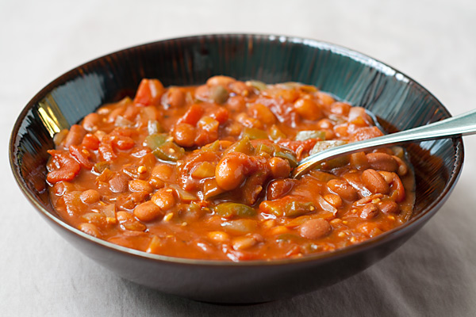

Chili

Ingredients
- 1 medium onion, diced
- 1 red bell pepper, diced
- 4 cloves garlic, minced
- 1 T olive oil
- 2 24oz cans tomato sauce
- 1 T cumin
- 1 T chili powder
- 1 T chipotle peppers in adobo
- 3 cans of your favorite beans
- 1/2 cup water
Instructions
- Saute onion and pepper in pot until softened
- add garlic and cook until fragrant
- add cumin and chili powder, cook for 30ish sec
- add tomato sauce, water, and chipotle pepper
- bring to a simmer and cook for 30 mins
- add beans and cook for 20 mins
- season to taste with s and p
return home